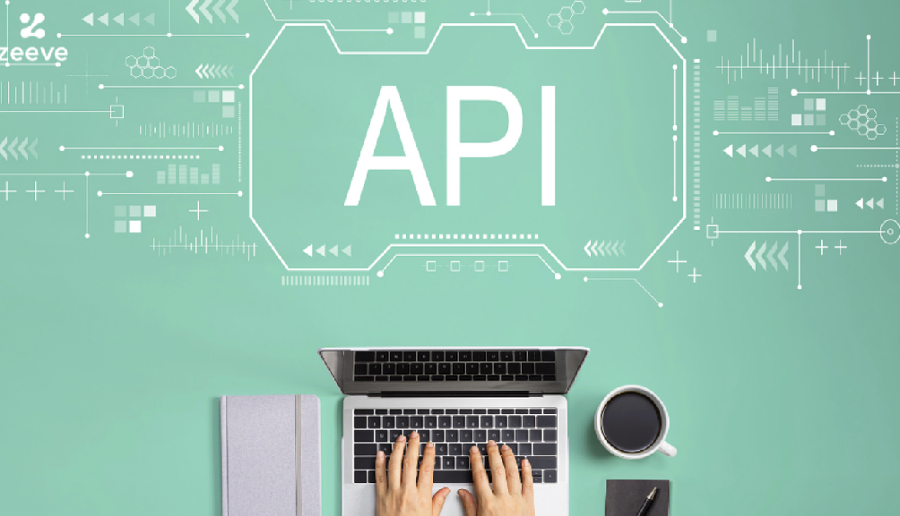

Una API REST (API RESTful) es una interfaz que sigue los principios de la arquitectura REST para facilitar la interacción con servicios web. Actúa como un intermediario entre el cliente y el servidor, permitiendo que se soliciten y obtengan datos. A través de métodos HTTP, como GET o POST, las API RESTful permiten que los clientes reciban respuestas en formatos como JSON o HTML. Estas APIs son escalables, seguras y permiten un control preciso sobre la autenticación y el acceso a los recursos, sin que el usuario necesite conocer los detalles técnicos del sistema.
| Título | Autores | Resumen | Palabras clave | Año | Publicado en | Ideas principales |
|---|---|---|---|---|---|---|
| Developments and applications of the OPTIMADE API for materials discovery, design, and data exchange | Matthew L. Evans, Johan Bergsma, Andrius Merkys, et al. | El artículo aborda la API OPTIMADE, diseñada para mejorar el acceso y la interoperabilidad de datos en la investigación de materiales. La API facilita la integración de diversas bases de datos y optimiza la búsqueda y recuperación de datos de estructuras cristalinas mediante un formato estándar. Esto permite a los científicos y a la industria acceder a datos de manera más eficiente, acelerando la innovación y el descubrimiento de nuevos materiales. | API, materiales, interoperabilidad, datos | 2024 | Royal Society of Chemistry |
1. La API OPTIMADE estandariza el acceso a datos de materiales, mejorando la interoperabilidad entre bases de datos.
2. Facilita la integración de datos de diferentes fuentes, permitiendo descubrimientos más rápidos y eficientes. 3. Contribuye a la creación de laboratorios autónomos al permitir la automatización en la búsqueda y análisis de datos. |
| Título | Autores | Resumen | Palabras clave | Año | Publicado en | Ideas principales |
|---|
| Título | Autores | Resumen | Palabras clave | Año | Publicado en | Ideas principales |
|---|
Cada integrante del equipo debe escribir su conclusión aquí.
Danna Sofía Calderón Alegre & Julián Cárdenas Peñuela